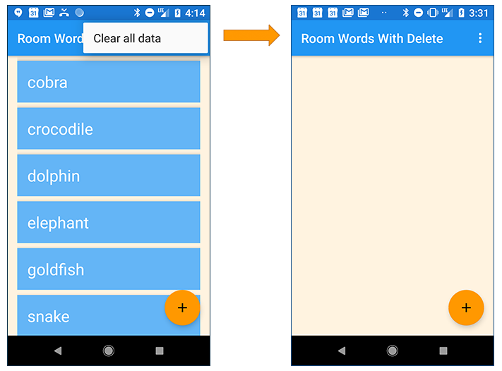
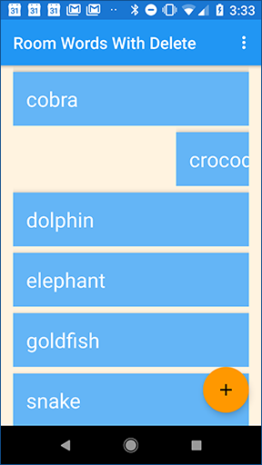

Ces travaux pratiques se base sur le cours de base pour les développeurs Android fourni par Google afin de les préparer pour le test de certification Associate Android Developer. Vous obtiendrez le plus de valeur de ce TP si vous travaillez successivement dans les codelabs.
This codelab (practical) follows on from 4.2A: Room, LiveData, and ViewModel. This codelab gives you more practice at using the API provided by the Room library to implement database functionality. You will add the ability to delete specific items from the database. This codelab also includes a coding challenge, in which you update the app so the user can edit existing data.
You should be able to create and run apps in Android Studio 3.0 or higher. In particular, be familiar with the following:
RecyclerView and adapters.RoomDatabase to store and retrieve data in Android's built-in SQLite database. You learned these topics in 4.1A: Room, LiveData, and ViewModel.You will extend the RoomWordsSample app that you created in the previous codelab. So far, that app displays a list of words, and users can add words. When the app closes and re-opens, the app re-initializes the database. Words that the user has added are lost.
In this practical, you extend the app so that it only initializes the data in the database if there is no existing data.
Then you add a menu item that allows the user to delete all the data.

You also enable the user to swipe a word to delete it from the database.

The RoomWordsSample app that you created in the previous practical deletes and re-creates the data whenever the user opens the app. This behavior isn't ideal, because users will want their added words to remain in the database when the app is closed. (Solution code for the previous practical is in GitHub.)
In this task you update the app so that when it opens, the initial data set is only added if the database has no data.
To detect whether the database contains data already, you can run a query to get one data item. If the query returns nothing, then the database is empty.
Currently, the WordDao interface has a method for getting all the words, but not for getting any single word. The method to get a single word does not need to return LiveData, because your app will call the method explicitly when needed.
WordDao interface, add a method to get any word:@Query("SELECT * from word_table LIMIT 1")
Word[] getAnyWord();Room issues the database query when the getAnyWord() method is called and returns an array containing one word. You don't need to write any additional code to implement it.
Use the getAnyWord() method in the method that initializes the database. If there is any data, leave the data as it is. If there is no data, add the initial data set.
PopulateDBAsync is an inner class in WordRoomDatbase. In PopulateDBAsync, update the doInBackground() method to check whether the database has any words before initializing the data:@Override
protected Void doInBackground(final Void... params) {
// If we have no words, then create the initial list of words
if (mDao.getAnyWord().length < 1) {
for (int i = 0; i <= words.length - 1; i++) {
Word word = new Word(words[i]);
mDao.insert(word);
}
}
return null;
}In the previous practical, you used the deleteAll() method to clear out all the data when the database opened. The deleteAll() method was only invoked from the PopulateDbAsync class when the app started. You will now make the deleteAll() method available through the ViewModel so that your app can call the method whenever it's needed.
Here are the general steps for implementing a method to use the Room library to interact with the database:
deleteAll() method, you already did this step in the previous practical.WordRepository class. Write the code to run the method in the background.WordRepository class, add the method to the WordViewModel. The rest of the app can then access the method through the WordViewModel.WordDao, check that the deleteAll() method is defined and annotated with the SQL that runs when the method executes:@Query("DELETE FROM word_table")
void deleteAll();Add the deleteAll() method to the WordRepository and implement an AsyncTask to delete all words in the background.
WordRepository, define deleteAllWordsAsyncTask as an inner class. Implement doInBackground() to delete all the words by calling deleteAll() on the DAO:private static class deleteAllWordsAsyncTask extends AsyncTask<Void, Void, Void> {
private WordDao mAsyncTaskDao;
deleteAllWordsAsyncTask(WordDao dao) {
mAsyncTaskDao = dao;
}
@Override
protected Void doInBackground(Void... voids) {
mAsyncTaskDao.deleteAll();
return null;
}
}WordRepository class, add the deleteAll() method to invoke the AsyncTask that you defined.public void deleteAll() {
new deleteAllWordsAsyncTask(mWordDao).execute();
}Make the deleteAll() method available to the MainActivity by adding it to the WordViewModel.
WordViewModel class, add the deleteAll() method:public void deleteAll() {mRepository.deleteAll();}Next, you add a menu item to enable users to invoke deleteAll().
menu_main.xml, change the menu option title and id, as follows:<item
android:id="@+id/clear_data"
android:orderInCategory="100"
android:title="@string/clear_all_data"
app:showAsAction="never" />MainActivity, implement the onOptionsItemSelected() method to invoke the deleteAll() method on the WordViewModel object.@Override
public boolean onOptionsItemSelected(MenuItem item) {
int id = item.getItemId();
if (id == R.id.clear_data) {
// Add a toast just for confirmation
Toast.makeText(this, "Clearing the data...",
Toast.LENGTH_SHORT).show();
// Delete the existing data
mWordViewModel.deleteAll();
return true;
}
return super.onOptionsItemSelected(item);
}Your app lets users add words and delete all words. In Tasks 4 and 5, you extend the app so that users can delete a word by swiping the item in the RecyclerView.
Again, here are the general steps to implement a method to use the Room library to interact with the database:
WordRepository class. Write the code to run the method in the background.WordRepository class, add the method to the WordViewModel. The rest of the app can then access the method through the WordViewModel.WordDao, add the deleteWord() method:@Delete
void deleteWord(Word word);Because this operation deletes a single row, the @Delete annotation is all that is needed to delete the word from the database.
WordRepository, define another AsyncTask called deleteWordAsyncTask as an inner class. Implement doInBackground() to delete a word by calling deleteWord() on the DAO:private static class deleteWordAsyncTask extends AsyncTask<Word, Void, Void> {
private WordDao mAsyncTaskDao;
deleteWordAsyncTask(WordDao dao) {
mAsyncTaskDao = dao;
}
@Override
protected Void doInBackground(final Word... params) {
mAsyncTaskDao.deleteWord(params[0]);
return null;
}
}WordRepository, add the deleteWord() method to invoke the AsyncTask you defined.public void deleteWord(Word word) {
new deleteWordAsyncTask(mWordDao).execute(word);
}To make the deleteWord() method available to other classes in the app, in particular, MainActivity, add it to WordViewModel.
WordViewModel, add the deleteWord() method:public void deleteWord(Word word) {mRepository.deleteWord(word);}You have now implemented the logic to delete a word. As yet, there is no way to invoke the delete-word operation from the app's UI. You fix that next.
In this task, you add functionality to allow users to swipe an item in the RecyclerView to delete it.
Use the ItemTouchHelper class provided by the Android Support Library (version 7 and higher or androidx) to implement swipe functionality in your RecyclerView. The ItemTouchHelper class has the following methods:
onMove() is called when the user moves the item. You will not implement any move functionality in this app.onSwipe() is called when the user swipes the item. You implement this method to delete the word that was swiped.WordListAdapter, add a method to get the word at a given position.public Word getWordAtPosition (int position) {
return mWords.get(position);
}MainActivity, in onCreate(), create the ItemTouchHelper. Attach the ItemTouchHelper to the RecyclerView.// Add the functionality to swipe items in the
// recycler view to delete that item
ItemTouchHelper helper = new ItemTouchHelper(
new ItemTouchHelper.SimpleCallback(0,
ItemTouchHelper.LEFT | ItemTouchHelper.RIGHT) {
@Override
public boolean onMove(RecyclerView recyclerView,
RecyclerView.ViewHolder viewHolder,
RecyclerView.ViewHolder target) {
return false;
}
@Override
public void onSwiped(RecyclerView.ViewHolder viewHolder,
int direction) {
int position = viewHolder.getAdapterPosition();
Word myWord = adapter.getWordAtPosition(position);
Toast.makeText(MainActivity.this, "Deleting " +
myWord.getWord(), Toast.LENGTH_LONG).show();
// Delete the word
mWordViewModel.deleteWord(myWord);
}
});
helper.attachToRecyclerView(recyclerView);Things to notice in the code:
onSwiped() gets the position of the ViewHolder that was swiped:
int position = viewHolder.getAdapterPosition();Given the position, you can get the word displayed by the ViewHolder by calling the getWordAtPosition() method that you defined in the adapter:
Word myWord = adapter.getWordAtPosition(position);Delete the word by calling deleteWord() on the WordViewModel:
mWordViewModel.deleteWord(myWord);Now run your app and delete some words
Android Studio project: RoomWordsWithDelete
Challenge: Update your app to allow users to edit a word by tapping the word and then saving their changes.
Make changes in NewWordActivity
You can add functionality to NewWordActivity, so that it can be used either to add a new word or edit an existing word.
Use an auto-generated key in Word
The Word entity class uses the word field as the database key. However, when you update a row in the database, the item being updated cannot be the primary key, because the primary key is unique to each row and never changes. So you need to add an auto-generated id to use as the primary key
@PrimaryKey(autoGenerate = true)
private int id;
@NonNull
@ColumnInfo(name = "word")
private String mWord;Add a constructor for Word that takes an id
Add a constructor to the Word entity class that takes id and word as parameters. Make sure this additional constructor is annotated using @Ignore, because Room expects only one constructor by default in an entity class.
@Ignore
public Word(int id, @NonNull String word) {
this.id = id;
this.mWord = word;
}To update an existing Word, create the Word using this constructor. Room will use the primary key (in this case the id) to find the existing entry in the database so it can be updated.
In WordDao, add the update() method like this:
@Update
void update(Word... word);In WordRoomDatabase, increase the database version number, since database table schema is changed.
@Database(entities = {Word.class}, version = 2, exportSchema = false)Android Studio project: RoomWordsWithUpdate
@insert, @delete, @update, @query.For example:
@Delete
void deleteWord(Word word);
@Update
void update(Word... word);@query annotation and provide the SQL for the operation.For example:
@Query("SELECT * from word_table ORDER BY word ASC")
LiveData<List<Word>> getAllWords();
@Query("DELETE FROM word_table")
void deleteAll();RecyclerView, you can use the ItemTouchHelper class.onMove() and onSwipe().RecylerView. The method takes a position and returns the relevant item. Call the method inside onMove() or onSwipe().Entities, data access objects (DAOs), and ViewModel:
ViewModel guideDao referenceViewModel referenceandroid.arch.persistence.room in the Android reference and expand the Annotations menu item in the left nav.ItemTouchHelper:
ItemTouchHelper reference